תקציר
העיבוד הישראלי ל"קטנטנות" — זיכיון המחזמר הלטינו־אמריקאי האגדי האהוב על דורות — עולה באקספו תל אביב כמחזמר משפחתי רחב היקף. בלב הסצנוגרפיה ניצב קיר LED מונומנטלי, שעבורו יוצר ניק דריידן, כמעצב הווידאו והסצנוגרף של המסך, את עולמו החזותי המלא של המופע.
צוות
- במאי: שחר פרץ
- עיצוב וידאו וסצנוגרפיית מסך: ניק דריידן
- מפיק: מאור מימון (toMix)
- תפאורה: בתיה סגל־פיק
- תאורה וטכנולוגיה: אורי מורג
- תיאום הפקה: חני יחזקאל
בכורה
12 באוגוסט 2026 — אקספו תל אביב, ביתן 2 (מופעים נוספים ב־14 וב־16 באוגוסט).
קונספט חזותי ומולטימדיה
עולם המסך של ההפקה נהגה כיקום מצויר וחי באסתטיקה של איורי רטרו — קיר ה־LED הופך לברומטר הרגשי של העלילה. פרטיטורת הווידאו של דריידן, שפותחה סצנה אחר סצנה לאורך המופע כולו, בנויה מ"פנימים חיים" — סביבות מונפשות הנושמות מאחורי המבצעים, על עקרונות אשליית העומק והפרספקטיבה של אמני הרנסנס; מ"לוחות פנטזיה" — רצפים דמיוניים על מלוא המסך; ומ"מורפים של מצבים" — מעברים חלקים בין מצביו הרגשיים של חלל אחד. התוכן מהונדס להקרנה תיאטרלית חיה, ושכבת הווידאו תפורה על המבנה המוזיקלי של כל מספר.
תהודה
ההפקה עלתה בבכורה ב־12 באוגוסט 2026 באולמות מלאים באקספו תל אביב; העיתונות הארגנטינאית דיווחה על כרטיסים שאזלו בכל המופעים ועל קהל ששר את כל השירים. הביקורת בישראל קיבלה את המופע בחום: בסרוגים תיארו הפקה מרשימה ומדויקת שעומדת בפני עצמה מעבר לנוסטלגיה — שיבחו את התפאורה המרהיבה וציינו שהבמה נקראה בבירור גם מהשורות הרחוקות של הביתן — וברשת 13 כינו אותה הפקה מושקעת וסוחפת. הגרסה הישראלית הפכה במהירות לנקודת ייחוס בינלאומית: שבוע לאחר הבכורה דיווחה התקשורת בארגנטינה שכריס מורנה ו־RGB מכינות חידוש רחב היקף של "קטנטנות" במוביסטאר ארנה בבואנוס איירס — בהשראה מוצהרת של ההפקה התל־אביבית.
על הבמה — אקספו תל אביב
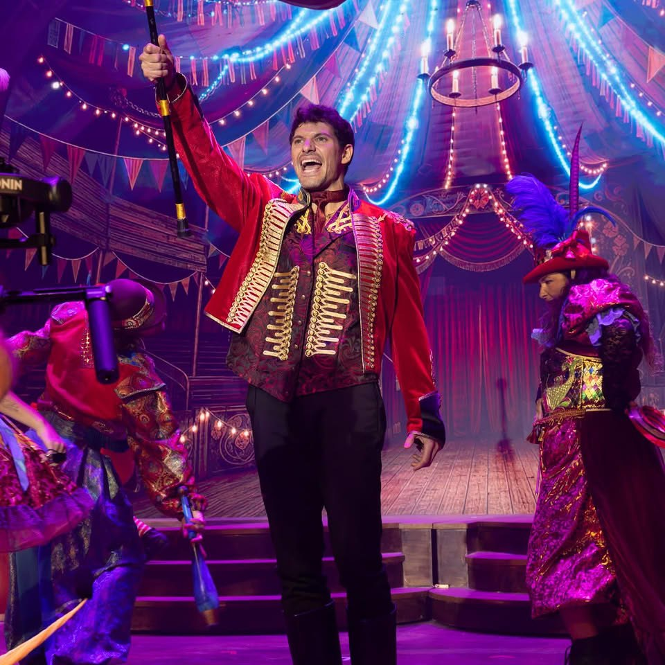
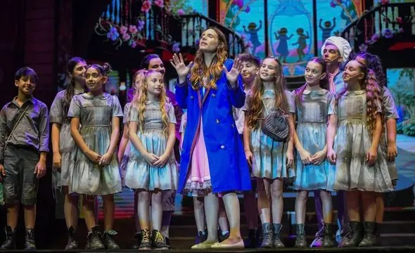
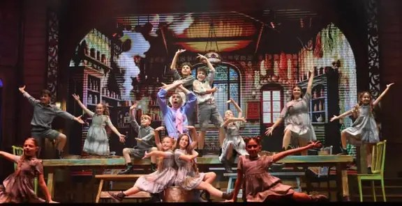
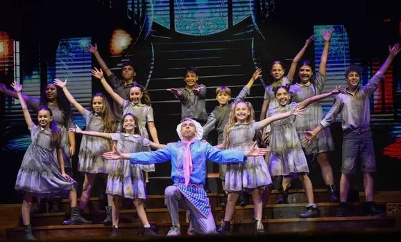
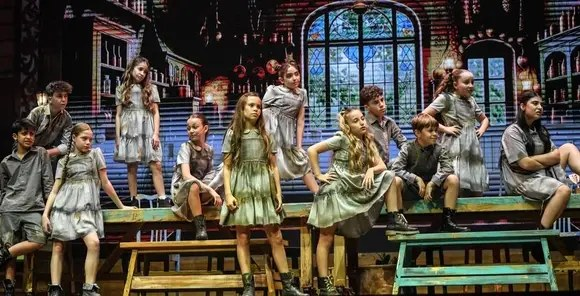
קונספט — עולם המסך
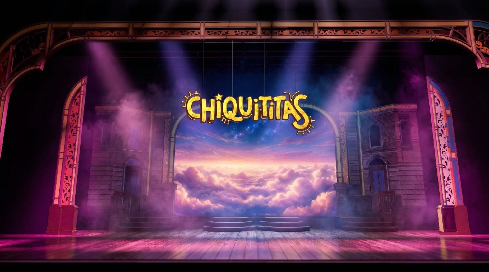
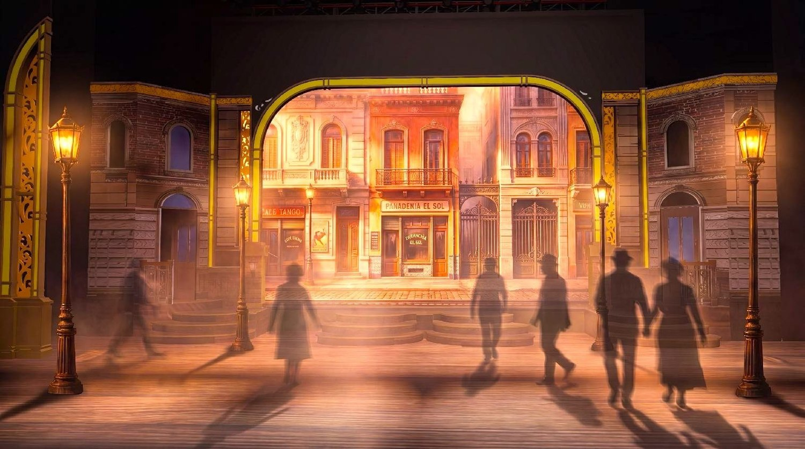
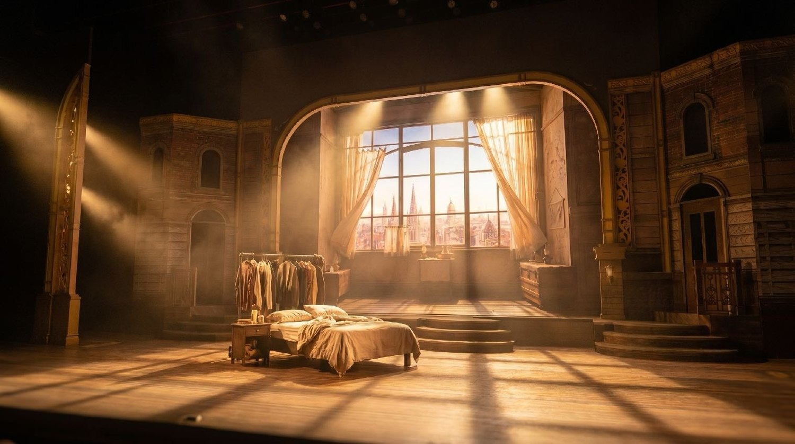
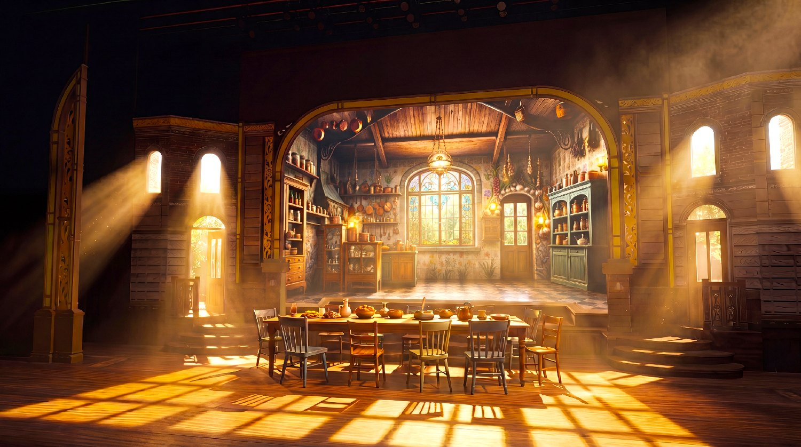
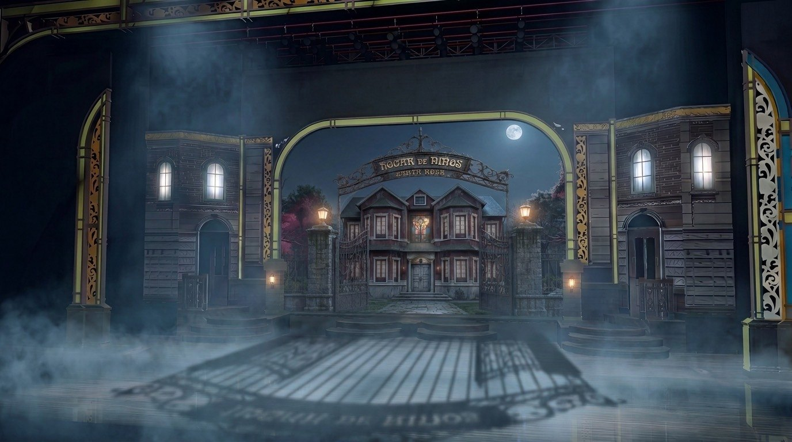
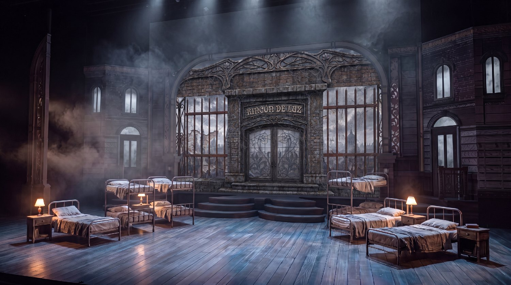
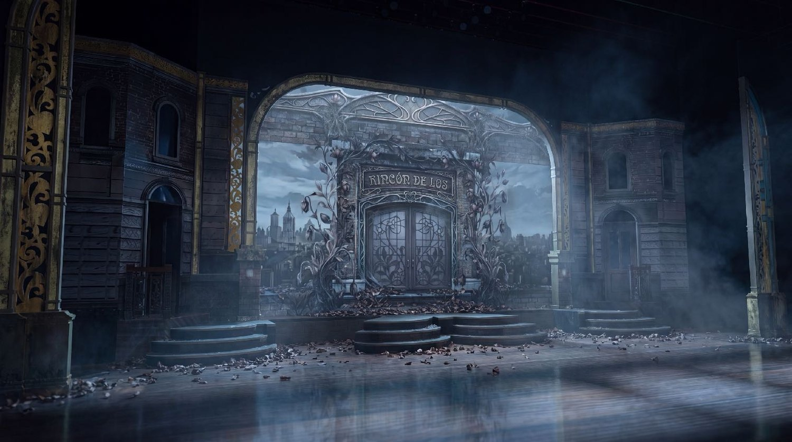
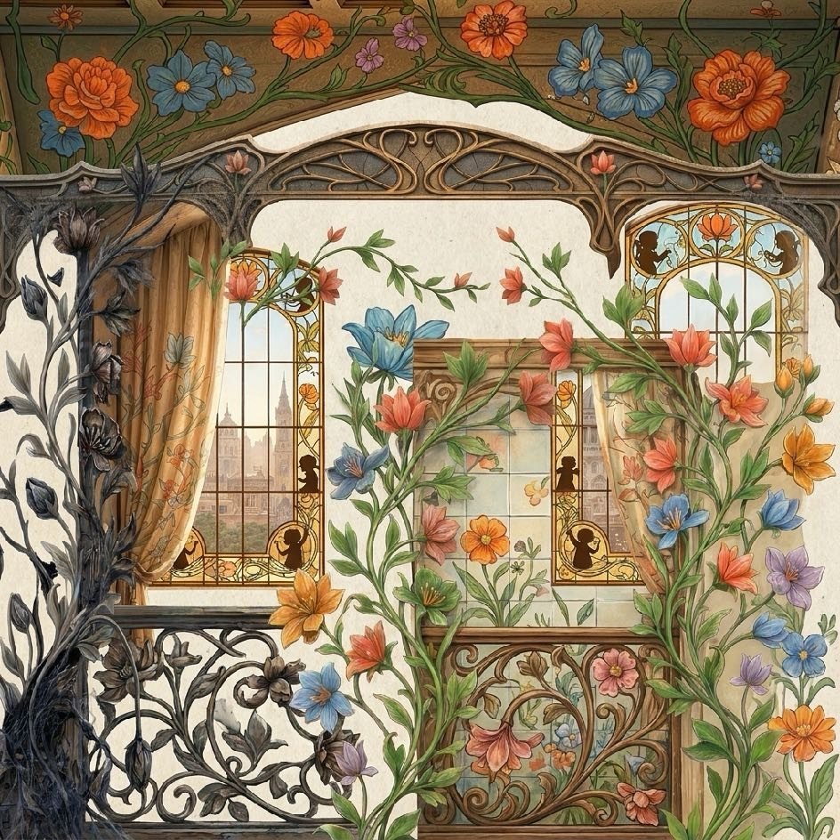
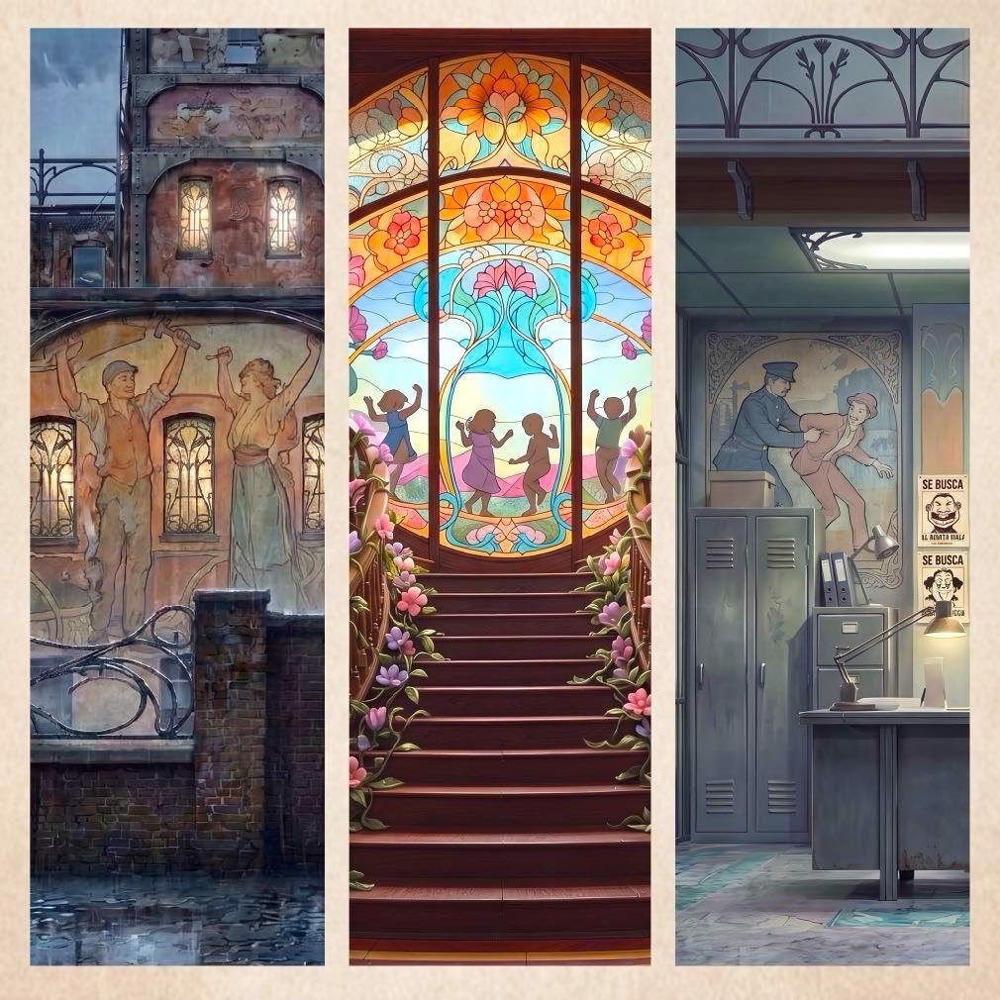